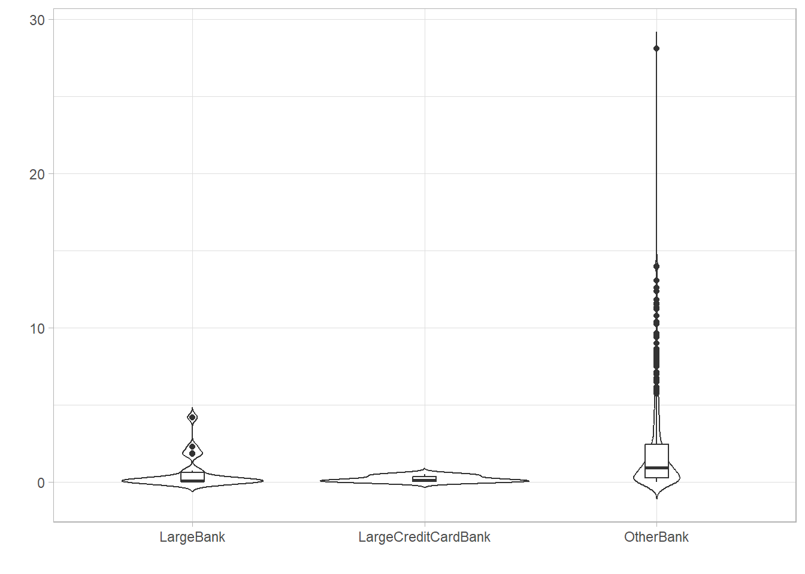
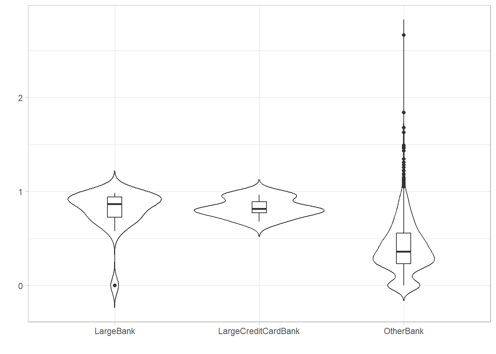
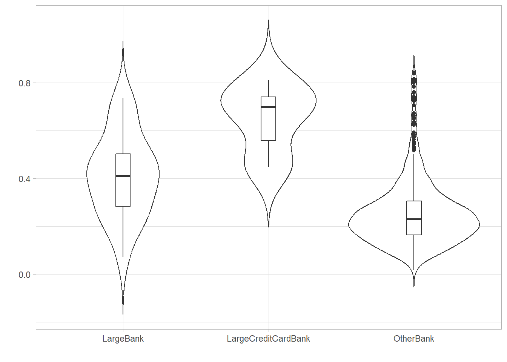
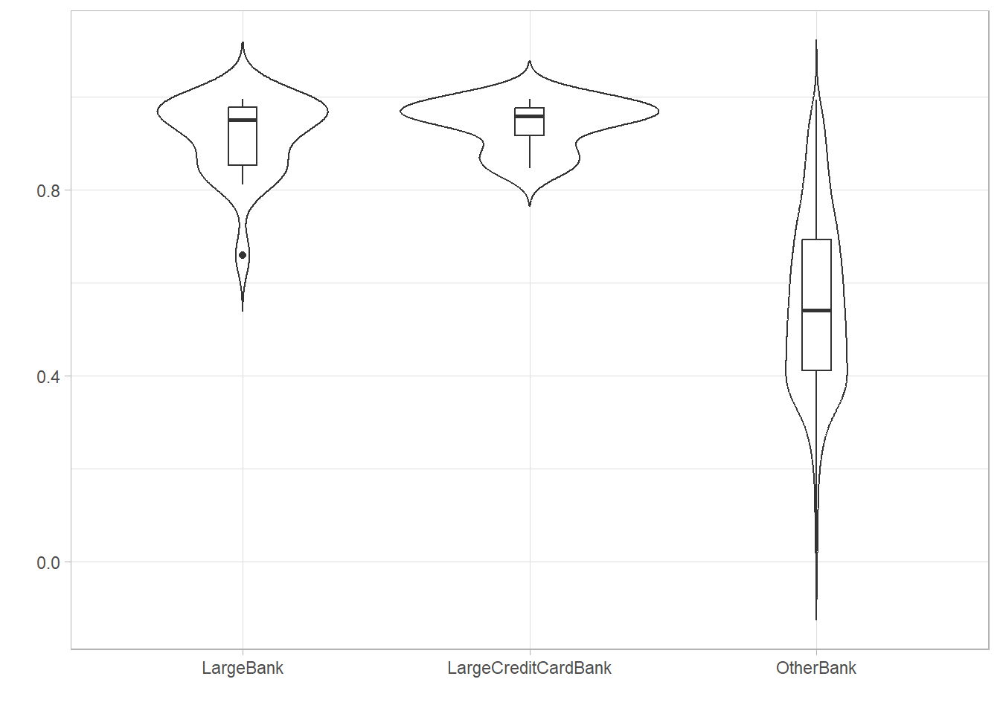
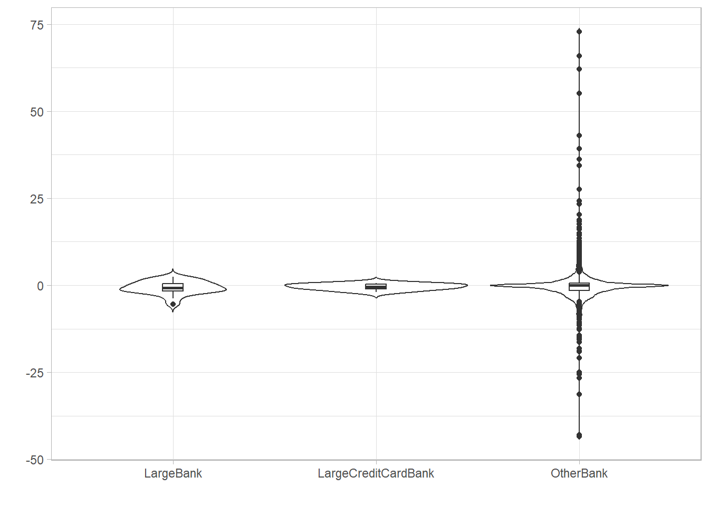
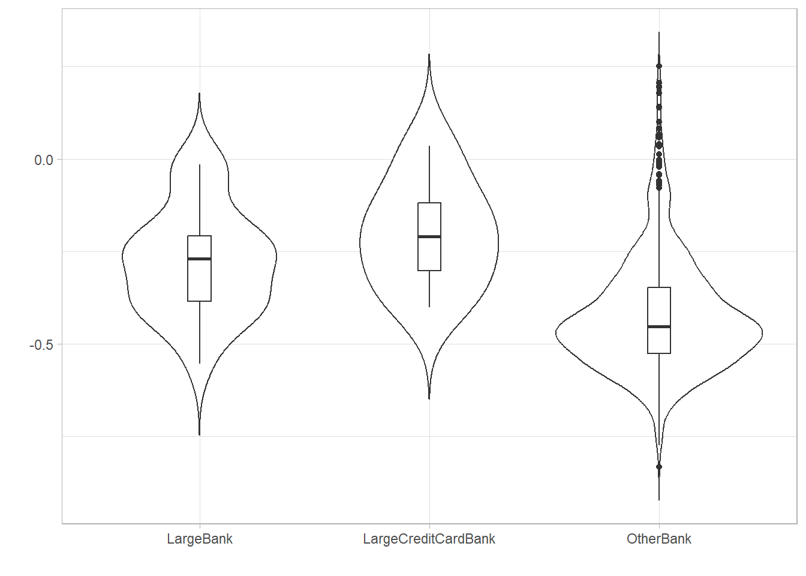
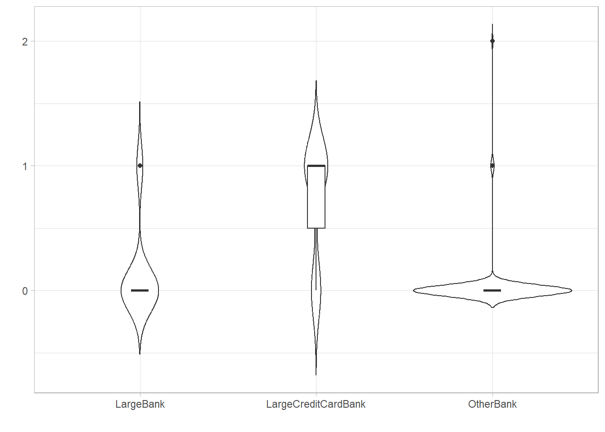

4 Data Outliers
Code
overdue30to89 |> features(Value, feature_set(tags = "lumpiness")) |>
plot_feature_violin("var_tiled_var")
overdue30to89 |> features(Value, feature_set(tags = "stability")) |>
plot_feature_violin("var_tiled_mean")
trend_features <- overdue30to89 |>
features(Value, feature_set(tags = "seasonal"))
trend_features |>
plot_feature_violin("seasonal_strength_year")
trend_features |>
plot_feature_violin("trend_strength")
trend_features |>
plot_feature_violin("linearity")
trend_features |>
plot_feature_violin("stl_e_acf1")
trend_features |>
plot_feature_violin("nsdiffs")






https://cran.r-project.org/web/packages/tsfeatures/vignettes/tsfeatures.html
outlier_banks <- post_features |> group_by(BankType) |> filter(!!as.name(feature_name) %in% range(!!as.name(feature_name))) |> distinct(BankName)
outlier_banks$BankName
post_features %>% right_join(extreme_seasonalities) %>% ggplot(aes(x = Quarter, y = Value)) + geom_line() + facet_grid(vars(BankName, scales::percent(seasonal_strength_year)), scales = “free_y”)
pcs |> ggplot(aes(x = .fittedPC1, y = .fittedPC2, col = BankName)) + geom_point() + theme(aspect.ratio = 1) + labs(title = “US Credit Cards 30-89 days”, subtitle = “Principal components”, x = “PC1”, y = “PC2”)+ theme(legend.position=“none”)
outlier_firms <- pcs |> filter( (.fittedPC2 > 2) | (.fittedPC1 < -7)) |> select(BankName, .fittedPC1, .fittedPC2)
overdue30to89_post %>%